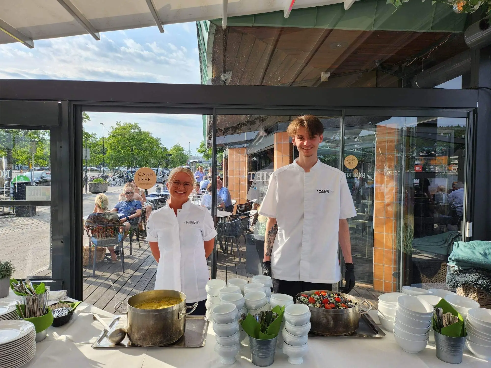
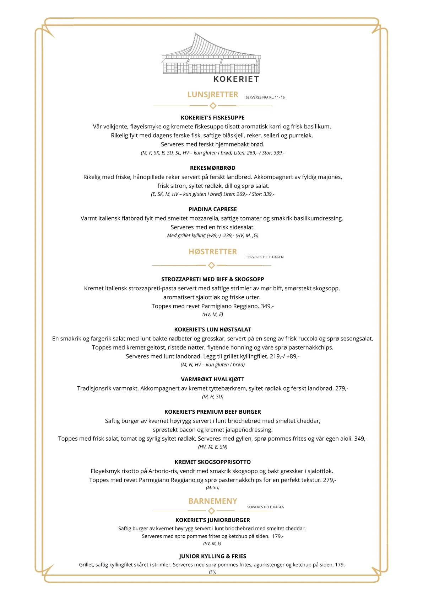

Catering, tapas og selskapsmenyer
Komplette menyer, koldtbord, tapas og selskapsretter til dåp, konfirmasjon, bryllup, minnesamvær og vennefester.
Les mer om tjenesten →
Catering, sjømat & matopplevelser · Sandefjord
Fiskesuppen er en klassisk kremet suppe med karri, basilikum, blåskjell, grønnsaker og dagens fisk.
Tjenester
Vi leverer fagmessige løsninger med tydelig avklaring i forkant, ryddig gjennomføring og dokumentert kvalitet.
Komplette menyer, koldtbord, tapas og selskapsretter til dåp, konfirmasjon, bryllup, minnesamvær og vennefester.
Les mer om tjenesten →
Egenproduserte og nøye utvalgte delikatesser, fersk sjømat, tradisjonsrik spekemat, sauser, supper og tilbehør av høy kvalitet.
Les mer om tjenesten →
Næringsrike og innbydende måltidsløsninger, møteservering og personalrestaurant som skaper trivsel og energi i arbeidshverdagen.
Les mer om tjenesten →
Smakfulle matgaver, spekefjøler og delikatesseskrin til ansatte, samarbeidspartnere og høytider.
Les mer om tjenesten →Derfor velger kundene oss
God smak starter alltid med råvarene – vi samarbeider tett med dedikerte fiskere, bønder og produsenter.
Vi kombinerer klassiske tilberedningsmetoder med moderne smaker og innbydende presentasjon.
Strenge rutiner for kjølekjede, hygiene og merking sikrer jevn og høy kvalitet ved hver leveranse.
Vi hjelper deg gjerne med å beregne riktige mengder og sette sammen en meny som passer anledningen perfekt.
Ekte matglede basert på gode råvarer, solid håndverk og raus gjestfrihet.
Smidig meny- og varebestilling
Oppgi anledning, antall gjester, eventuelle allergier og ønsket tidspunkt, så bekrefter vi bestillingen raskt og tydelig.
Din bestilling
Prosessen vår
Beskriv kort hva du ønsker hjelp til på skjema, e-post eller telefon, så tar vi raskt kontakt.
Vi avklarer omfang, gjennomfører eventuell befaring og gir deg et ryddig og forutsigbart tilbud.
Oppdraget gjennomføres til avtalt tid og kvalitet, med tett oppfølging helt til alt er ferdig levert.
Utvalgte glimt
Kontakt oss
Fortell oss kort hva du trenger hjelp til, så svarer vi deg raskt med faglige råd, prisoverslag eller avtale om befaring.